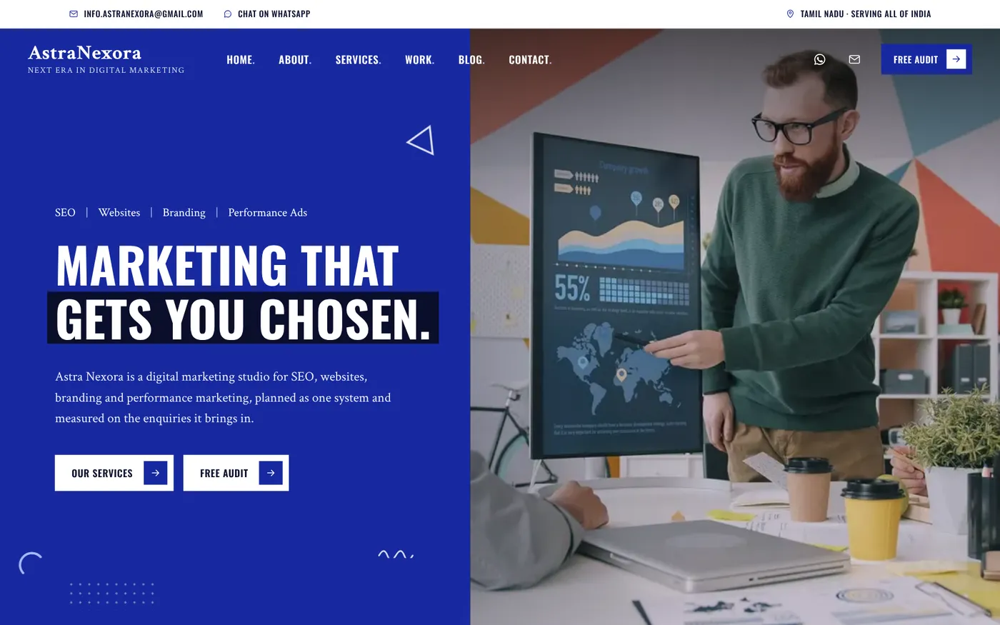
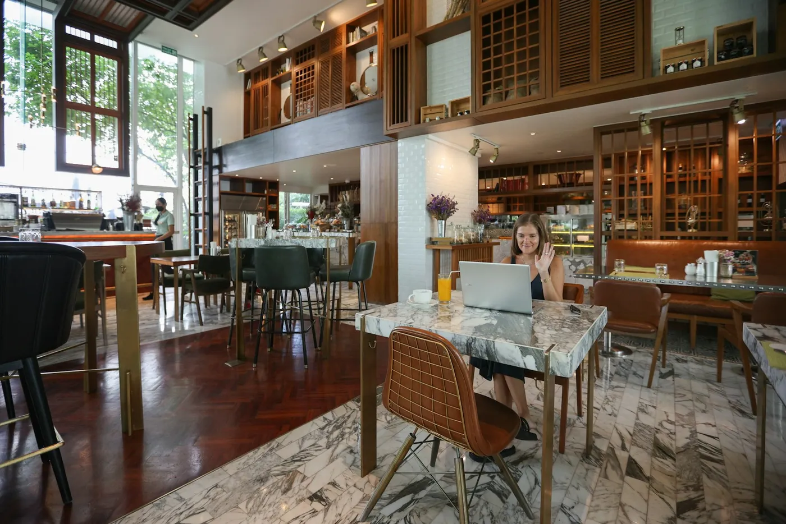

SEO expert in Tamil Nadu
I help businesses in Tamil Nadu and across India get found on Google: in search results, on Google Maps and in AI answers. I run every audit and fix myself, so you always know who is doing the work.
01Why SEO matters for your business
Most customers start on Google. If your website isn't on the first page, or your business doesn't show on Maps when someone nearby searches, those calls and enquiries go to a competitor. Good SEO makes sure the people already looking for what you sell find you first.
02How I work
First an audit of your website, your Google Business Profile and the competitors ranking above you. Then I fix what holds you back, build pages around what your customers actually search for, and set up Search Console and GA4 so we can see what's working. You get a clear monthly report in plain language.
03What I won't promise
No honest SEO expert can guarantee the number one spot. What I can promise is a clear plan, real fixes you can see on your site, and reporting that shows exactly what changed. SEO usually starts showing results in three to six months.
Projects that show how

Astra Nexora – Agency Website
A fast, SEO-ready agency website with service pages, a blog and a WhatsApp enquiry form.
- HTML/CSS/JS
- GSAP
- Netlify

Ankhor Dental Lab – Website & SEO
Stronger search visibility through on-page SEO, technical fixes and a clearer website structure.
- WordPress
- Rank Math
- Search Console

Google Business Profile Optimisation
Optimising Business Profiles so local customers find accurate details and trust the business.
- Google Business Profile
- Google Maps
- Canva
Common questions
How long does SEO take to show results?
Usually three to six months, depending on your website, your competition and how much content you need. Technical fixes and Google Business Profile updates can help sooner.
Can you guarantee first page rankings?
No. Nobody controls Google's rankings, and anyone who guarantees them is guessing. I focus on the work that moves rankings and show you the results every month.
Do you do local SEO for clinics and shops?
Yes. Most of my SEO work is local: dental clinics, a dental lab and local businesses that need to show up on Google Maps and nearby searches.
How much does SEO cost?
It depends on the size of your website and your goals. Send me your website on WhatsApp and I'll reply with what I'd fix first and a quote.